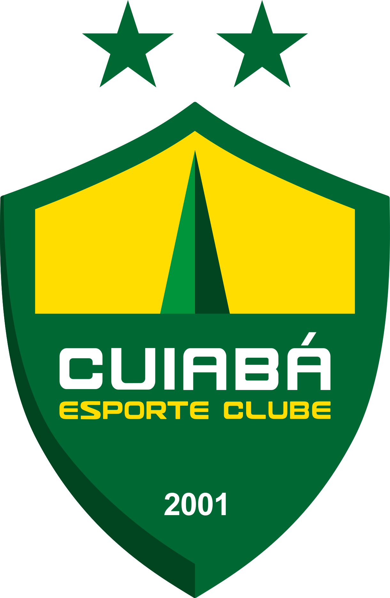

PLAYER PROFILE · LORENZO
PLAYER PROFILE · LORENZOLORENZO

CuiabáLateral esquerdo / alaLateral esquerdo / alaLeft-back / wing-backLateral izquierdo / carrileroCanhotoEsquerdinoLeft-footedZurdoLorenzo
Silva Martins
Lateral que ataca com drible e condução e é forte no desarme, e uma das grandes promessas do futebol brasileiroLateral que ataca com drible e condução e é forte no desarme, e uma das grandes promessas do futebol brasileiroA full-back who attacks with the dribble and the carry and is strong in the tackle, and one of the great prospects of Brazilian footballLateral que ataca con regate y conducción y es fuerte en la entrada, y una de las grandes promesas del fútbol brasileño
Futsal, quatro anos de base no Novo Hamburgo, Palmeiras e Goiás (Sub-17). No Cuiabá desde 2024.Futsal, quatro anos de formação no Novo Hamburgo, Palmeiras e Goiás (Sub-17). No Cuiabá desde 2024.Futsal, four years in the Novo Hamburgo academy, then Palmeiras and Goiás (U-17). At Cuiabá since 2024.Fútbol sala, cuatro años en la cantera del Novo Hamburgo, Palmeiras y Goiás (Sub-17). En el Cuiabá desde 2024.
Estreou em janeiro de 2026; titular regular da Série B desde 09/08.Estreou-se em janeiro de 2026; titular habitual na Série B desde 09/08.Debut in January 2026; a regular Série B starter since 9 August.Debutó en enero de 2026; titular habitual en la Série B desde el 09/08.
Convocado para a Seleção Sub-20 em 30/10/2026.Convocado para a Seleção Sub-20 em 30/10/2026.Called up to Brazil's Under-20s on 30 October 2026.Convocado con la Selección Sub-20 el 30/10/2026.
Do futsal à lateral esquerda do CuiabáDo futsal à lateral esquerda do CuiabáFrom futsal to Cuiabá's left-backDel fútbol sala a lateral izquierdo del Cuiabá
Quatro anos nas categorias de base, até dezembro de 2022. A carreira começou no futsal.Quatro anos nas categorias de base, até dezembro de 2022. A carreira começou no futsal.Four years in the academy, until December 2022. His career started in futsal.Cuatro años en las categorías inferiores, hasta diciembre de 2022. La carrera empezó en el fútbol sala.
Sub-17. Integrou o elenco campeão do Campeonato Brasileiro Sub-17 (2023).Sub-17. Integrou o plantel campeão do Campeonato Brasileiro Sub-17 (2023).Under-17s. Part of the squad that won the 2023 Brazilian U-17 Championship.Sub-17. Formó parte de la plantilla campeona del Campeonato Brasileño Sub-17 (2023).
Sub-17.Sub-17.Under-17s.Sub-17.
Sub-17 e Sub-20. Títulos: Mato-Grossense Sub-17 (2024) e Mato-Grossense Sub-20 (2024 e 2025). Em 2026, integrou também o elenco campeão do Mato-Grossense Sub-20.Sub-17 e Sub-20. Títulos: Mato-Grossense Sub-17 (2024) e Mato-Grossense Sub-20 (2024 e 2025). Em 2026, integrou também o plantel campeão do Mato-Grossense Sub-20.Under-17s and Under-20s. Honours: Mato Grosso U-17 (2024) and Mato Grosso U-20 (2024 and 2025). In 2026 he was also part of the squad that won the Mato Grosso U-20 title.Sub-17 y Sub-20. Títulos: Campeonato de Mato Grosso Sub-17 (2024) y Sub-20 (2024 y 2025). En 2026, formó parte también de la plantilla campeona del Sub-20.
Estreia no time principal em 24/01/2026, na Série B desde 21/03 e titular regular desde 09/08. Os três gols como profissional vieram desde a 20ª rodada: 08/09 e 21/09 na Série B e 29/10 na Copa FMF (taça estadual de Mato Grosso).Estreia na equipa principal em 24/01/2026, na Série B desde 21/03 e titular regular desde 09/08. Os três golos como profissional vieram desde a 20.ª jornada: 08/09 e 21/09 na Série B e 29/10 na Copa FMF (taça estadual de Mato Grosso).First-team debut on 24 Jan 2026, in the Série B since 21 Mar and a regular starter since 9 Aug. All three first-team goals came since round 20: 8 Sep and 21 Sep in the Série B and 29 Oct in the Copa FMF (Mato Grosso state cup).Debut en el primer equipo el 24/01/2026, en la Série B desde el 21/03 y titular habitual desde el 09/08. Los tres goles como profesional llegaron desde la jornada 20: 08/09 y 21/09 en la Série B y 29/10 en la Copa FMF (copa estatal de Mato Grosso).
90% das ações pela esquerda, nos três terços do campo90% das ações pela esquerda, nos três terços do campo90% of his actions on the left, across all three thirds of the pitch90% de las acciones por la izquierda, en los tres tercios del campo
1.074 ações. A maior parte pela esquerda (90%), mais vezes no terço central (43%).1.074 ações. A maior parte pela esquerda (90%), mais vezes no terço central (43%).1,074 actions. Mostly down the left (90%), most often in the middle third (43%).1.074 acciones. Sobre todo por la izquierda (90%), más a menudo en el tercio medio (43%).
640 passes, 80% certos. A maior parte pela esquerda (95%), mais vezes no terço central (49%).640 passes, 80% certos. A maior parte pela esquerda (95%), mais vezes no terço central (49%).640 passes, 80% successful. Mostly down the left (95%), most often in the middle third (49%).640 pases, 80% precisos. Sobre todo por la izquierda (95%), más a menudo en el tercio medio (49%).
57 dribles, 42% certos. A maior parte pela esquerda (95%), sobretudo no terço ofensivo (58%).57 dribles, 42% certos. A maior parte pela esquerda (95%), sobretudo no terço ofensivo (58%).57 dribbles, 42% successful. Mostly down the left (95%), mostly in the attacking third (58%).57 regates, 42% completados. Sobre todo por la izquierda (95%), sobre todo en el tercio ofensivo (58%).
45 desarmes, 78% certos. A maior parte pela esquerda (91%), mais vezes no terço defensivo (42%).45 desarmes, 78% certos. A maior parte pela esquerda (91%), mais vezes no terço defensivo (42%).45 tackles, 78% successful. Mostly down the left (91%), most often in the defensive third (42%).45 entradas, 78% ganadas. Sobre todo por la izquierda (91%), más a menudo en el tercio defensivo (42%).
13 interceptações. A maior parte pela esquerda (85%), sobretudo no terço defensivo (54%).13 interceções. A maior parte pela esquerda (85%), sobretudo no terço defensivo (54%).13 interceptions. Mostly down the left (85%), mostly in the defensive third (54%).13 intercepciones. Sobre todo por la izquierda (85%), sobre todo en el tercio defensivo (54%).
65 recuperações de bola. A maior parte pela esquerda (86%), sobretudo no terço defensivo (60%).65 recuperações de bola. A maior parte pela esquerda (86%), sobretudo no terço defensivo (60%).65 ball recoveries. Mostly down the left (86%), mostly in the defensive third (60%).65 recuperaciones de balón. Sobre todo por la izquierda (86%), sobre todo en el tercio defensivo (60%).
32 cortes. Mais vezes pela faixa central (50%), sobretudo no terço defensivo (100%).32 cortes. Mais vezes pela faixa central (50%), sobretudo no terço defensivo (100%).32 clearances. Most often down the centre (50%), mostly in the defensive third (100%).32 despejes. Más a menudo por la zona central (50%), sobre todo en el tercio defensivo (100%).
38 duelos aéreos, 37% certos. A maior parte pela esquerda (69%), mais vezes no terço central (39%).38 duelos aéreos, 37% certos. A maior parte pela esquerda (69%), mais vezes no terço central (39%).38 aerial duels, 37% successful. Mostly down the left (69%), most often in the middle third (39%).38 duelos aéreos, 37% ganados. Sobre todo por la izquierda (69%), más a menudo en el tercio medio (39%).
Posição média no campo: terço central, pela esquerda. 90% das ações pela esquerda e 30% no terço ofensivo.Posição média no campo: terço central, pela esquerda. 90% das ações pela esquerda e 30% no terço ofensivo.Average position on the pitch: middle third, down the left. 90% of the actions on the left and 30% in the attacking third.Posición media en el campo: tercio medio, por la izquierda. 90% de las acciones por la izquierda y 30% en el tercio ofensivo.
640 passes (com 65 cruzamentos), 80% certos. A maior parte pela esquerda (95%), mais vezes no terço central (49%).640 passes (com 65 cruzamentos), 80% certos. A maior parte pela esquerda (95%), mais vezes no terço central (49%).640 passes (including 65 crosses), 80% accurate. Mostly down the left (95%), most often in the middle third (49%).640 pases (con 65 centros), 80% precisos. Sobre todo por la izquierda (95%), más a menudo en el tercio medio (49%).
512 passes certos. A maior parte pela esquerda (96%), sobretudo no terço central (54%).512 passes certos. A maior parte pela esquerda (96%), sobretudo no terço central (54%).512 accurate passes. Mostly down the left (96%), mostly in the middle third (54%).512 pases precisos. Sobre todo por la izquierda (96%), sobre todo en el tercio medio (54%).
128 passes errados. A maior parte pela esquerda (93%), mais vezes no terço ofensivo (45%).128 passes errados. A maior parte pela esquerda (93%), mais vezes no terço ofensivo (45%).128 inaccurate passes. Mostly down the left (93%), most often in the attacking third (45%).128 pases imprecisos. Sobre todo por la izquierda (93%), más a menudo en el tercio ofensivo (45%).
65 cruzamentos, 26% certos. A maior parte pela esquerda (94%), sobretudo no terço ofensivo (97%).65 cruzamentos, 26% certos. A maior parte pela esquerda (94%), sobretudo no terço ofensivo (97%).65 crosses, 26% accurate. Mostly down the left (94%), mostly in the attacking third (97%).65 centros, 26% precisos. Sobre todo por la izquierda (94%), sobre todo en el tercio ofensivo (97%).
21 finalizações em 20 jogos: 2 gols, 1 na trave, 8 defendidas ou bloqueadas e 10 para fora.21 remates em 20 jogos: 2 golos, 1 ao poste, 8 defendidos ou bloqueados e 10 para fora.21 shots in 20 games: 2 goals, 1 off the post, 8 saved or blocked and 10 off target.21 remates en 20 partidos: 2 goles, 1 al poste, 8 parados o bloqueados y 10 fuera.
10 finalizações de pé esquerdo em 20 jogos: 1 gol, 1 na trave, 3 defendidas ou bloqueadas e 5 para fora.10 remates de pé esquerdo em 20 jogos: 1 golo, 1 ao poste, 3 defendidos ou bloqueados e 5 para fora.10 left-footed shots in 20 games: 1 goal, 1 off the post, 3 saved or blocked and 5 off target.10 remates de pie izquierdo en 20 partidos: 1 gol, 1 al poste, 3 parados o bloqueados y 5 fuera.
7 finalizações de pé direito em 20 jogos: 0 gols, 0 na trave, 5 defendidas ou bloqueadas e 2 para fora.7 remates de pé direito em 20 jogos: 0 golos, 0 ao poste, 5 defendidos ou bloqueados e 2 para fora.7 right-footed shots in 20 games: 0 goals, 0 off the post, 5 saved or blocked and 2 off target.7 remates de pie derecho en 20 partidos: 0 goles, 0 al poste, 5 parados o bloqueados y 2 fuera.
4 finalizações de cabeça em 20 jogos: 1 gol, 0 na trave, 0 defendidas ou bloqueadas e 3 para fora.4 remates de cabeça em 20 jogos: 1 golo, 0 ao poste, 0 defendidos ou bloqueados e 3 para fora.4 headers in 20 games: 1 goal, 0 off the post, 0 saved or blocked and 3 off target.4 remates de cabeza en 20 partidos: 1 gol, 0 al poste, 0 parados o bloqueados y 3 fuera.
Perfil híbrido: entre o lateral ofensivo e o de um contra umPerfil híbrido: entre o lateral ofensivo e o de um contra umA hybrid profile: between the attacking and the one-on-one full-backPerfil híbrido: entre el lateral ofensivo y el de uno contra uno
Cada perfil recebe uma nota de 0 a 100 de aderência ao jogo dele. O nome só vale quando o critério principal é atingido, e nenhum dos cinco perfis de lateral chega lá: o jogo dele mistura o lateral que serve a área e o que resolve no drible. Estes são os três mais próximos.Cada perfil recebe uma nota de 0 a 100 de aderência ao jogo dele. O nome só vale quando o critério principal é atingido, e nenhum dos cinco perfis de lateral chega lá: o jogo dele mistura o lateral que serve a área e o que resolve no drible. Estes são os três mais próximos.Each profile gets a 0-to-100 score for how closely it matches his game. The label only applies when the main criterion is met, and none of the five full-back profiles gets there: his game blends the full-back who serves the box and the one who settles things with the dribble. These are the three closest.Cada perfil recibe una nota de 0 a 100 de afinidad con su juego. El nombre solo vale cuando se cumple el criterio principal, y ninguno de los cinco perfiles de lateral llega: su juego mezcla el lateral que sirve el área y el que resuelve con el regate. Estos son los tres más cercanos.
O lateral que ataca por fora e serve a área: volume e acerto de cruzamento, passe que vira finalização e presença na área adversária.O lateral que ataca por fora e serve a área: volume e acerto de cruzamento, passe que vira remate e presença na área adversária.The full-back who attacks down the outside and serves the box: crossing volume and accuracy, passes that lead to shots and presence in the opposition box.El lateral que ataca por fuera y sirve el área: volumen y acierto en el centro, pases que terminan en remate y presencia en el área rival.
A primeira condição é a principal: sem ela, o nome não vale. O número é a nota de 0 a 100 do quanto o jogo dele se parece com o perfil.A primeira condição é a principal: sem ela, o nome não vale. O número é a nota de 0 a 100 do quanto o jogo dele se parece com o perfil.The first condition is the main one: without it, the name does not apply. The figure is a 0 to 100 score for how closely his game matches the profile.La primera condición es la principal: sin ella, el nombre no vale. El número es la nota de 0 a 100 de lo que se parece su juego al perfil.
O lateral que resolve pelo drible: passa pelo marcador, conduz para a frente e ganha metros sozinho. Chega ao fundo pelo pé, não pelo cruzamento de primeira.O lateral que resolve pelo drible: passa pelo marcador, conduz para a frente e ganha metros sozinho. Chega ao fundo pelo pé, não pelo cruzamento de primeira.The full-back who settles things with the dribble: he beats his marker, carries forward and gains ground on his own, reaching the byline on the ball rather than with a first-time cross.El lateral que resuelve con el regate: supera a su marcador, conduce hacia delante y gana metros solo. Llega al fondo con el balón en los pies, no con el centro de primeras.
A primeira condição é a principal: sem ela, o nome não vale. O número é a nota de 0 a 100 do quanto o jogo dele se parece com o perfil.A primeira condição é a principal: sem ela, o nome não vale. O número é a nota de 0 a 100 do quanto o jogo dele se parece com o perfil.The first condition is the main one: without it, the name does not apply. The figure is a 0 to 100 score for how closely his game matches the profile.La primera condición es la principal: sin ella, el nombre no vale. El número es la nota de 0 a 100 de lo que se parece su juego al perfil.
O ala de linha de cinco: percorre o corredor inteiro nos dois sentidos, com piso alto de trabalho defensivo e de chegada ao ataque.O ala de linha de cinco: percorre o corredor inteiro nos dois sentidos, com piso alto de trabalho defensivo e de chegada ao ataque.The wing-back in a back five: covers the whole flank in both directions, with a high baseline of defensive work and of arrivals in attack.El carrilero de línea de cinco: recorre toda la banda en los dos sentidos, con un piso alto de trabajo defensivo y de llegada al ataque.
A primeira condição é a principal: sem ela, o nome não vale. O número é a nota de 0 a 100 do quanto o jogo dele se parece com o perfil.A primeira condição é a principal: sem ela, o nome não vale. O número é a nota de 0 a 100 do quanto o jogo dele se parece com o perfil.The first condition is the main one: without it, the name does not apply. The figure is a 0 to 100 score for how closely his game matches the profile.La primera condición es la principal: sin ella, el nombre no vale. El número es la nota de 0 a 100 de lo que se parece su juego al perfil.
Desde a 20ª rodada, é quem mais joga no CuiabáDesde a 20.ª jornada, é quem mais joga no CuiabáSince round 20, he plays more than anyone at CuiabáDesde la jornada 20, es quien más juega en el Cuiabá
Até a 19ª rodada, Lorenzo tinha 3 jogos na Série B. Desde a 20ª são 17 jogos, 15 como titular e 1.406 dos 1.530 minutos possíveis (92%): o jogador com mais minutos do Cuiabá na Série B nesse período. Com a Copa FMF de 29/10 (77 minutos), são 1.483 minutos desde 27/07, e os três gols dele como profissional vieram todos nesta fase.Até à 19.ª jornada, Lorenzo tinha 3 jogos na Série B. Desde a 20.ª são 17 jogos, 15 como titular e 1.406 dos 1.530 minutos possíveis (92%): o jogador com mais minutos do Cuiabá na Série B nesse período. Com a Copa FMF de 29/10 (77 minutos), são 1.483 minutos desde 27/07, e os três golos dele como profissional vieram todos nesta fase.Up to round 19, Lorenzo had 3 games in the Série B. Since round 20 it is 17 games, 15 as a starter and 1,406 of the 1,530 possible minutes (92%): the player with the most Série B minutes at Cuiabá in that period. With the 29 Oct Copa FMF game (77 minutes), that makes 1,483 minutes since 27 Jul, and all three of his first-team goals came in this stretch.Hasta la jornada 19, Lorenzo tenía 3 partidos en la Série B. Desde la 20 son 17 partidos, 15 como titular y 1.406 de los 1.530 minutos posibles (92%): el jugador con más minutos del Cuiabá en la Série B en ese periodo. Con la Copa FMF del 29/10 (77 minutos), son 1.483 minutos desde el 27/07, y sus tres goles como profesional llegaron todos en esta etapa.
Fora. Saiu do banco, 31 minutos. Dribles certos: 1 · desarmes certos: 0 · conduções progressivas: 4.Fora. Saiu do banco, 31 minutos. Dribles certos: 1 · desarmes certos: 0 · conduções progressivas: 4.Away. Off the bench, 31 minutes. Successful dribbles: 1 · tackles won: 0 · progressive carries: 4.Fuera. Salió del banquillo, 31 minutos. Regates completados: 1 · entradas ganadas: 0 · conducciones progresivas: 4.
Em casa. Titular, 90 minutos. Dribles certos: 5 · desarmes certos: 0 · conduções progressivas: 13.Em casa. Titular, 90 minutos. Dribles certos: 5 · desarmes certos: 0 · conduções progressivas: 13.At home. Starter, 90 minutes. Successful dribbles: 5 · tackles won: 0 · progressive carries: 13.En casa. Titular, 90 minutos. Regates completados: 5 · entradas ganadas: 0 · conducciones progresivas: 13.
Fora. Titular, 80 minutos. Dribles certos: 0 · desarmes certos: 1 · conduções progressivas: 4.Fora. Titular, 80 minutos. Dribles certos: 0 · desarmes certos: 1 · conduções progressivas: 4.Away. Starter, 80 minutes. Successful dribbles: 0 · tackles won: 1 · progressive carries: 4.Fuera. Titular, 80 minutos. Regates completados: 0 · entradas ganadas: 1 · conducciones progresivas: 4.
Em casa. Titular, 90 minutos. Dribles certos: 1 · desarmes certos: 2 · conduções progressivas: 9.Em casa. Titular, 90 minutos. Dribles certos: 1 · desarmes certos: 2 · conduções progressivas: 9.At home. Starter, 90 minutes. Successful dribbles: 1 · tackles won: 2 · progressive carries: 9.En casa. Titular, 90 minutos. Regates completados: 1 · entradas ganadas: 2 · conducciones progresivas: 9.
Em casa. Titular, 90 minutos. Dribles certos: 0 · desarmes certos: 1 · conduções progressivas: 17.Em casa. Titular, 90 minutos. Dribles certos: 0 · desarmes certos: 1 · conduções progressivas: 17.At home. Starter, 90 minutes. Successful dribbles: 0 · tackles won: 1 · progressive carries: 17.En casa. Titular, 90 minutos. Regates completados: 0 · entradas ganadas: 1 · conducciones progresivas: 17.
Fora. Titular, 85 minutos. Dribles certos: 0 · desarmes certos: 1 · conduções progressivas: 2.Fora. Titular, 85 minutos. Dribles certos: 0 · desarmes certos: 1 · conduções progressivas: 2.Away. Starter, 85 minutes. Successful dribbles: 0 · tackles won: 1 · progressive carries: 2.Fuera. Titular, 85 minutos. Regates completados: 0 · entradas ganadas: 1 · conducciones progresivas: 2.
Fora. Titular, 90 minutos. Dribles certos: 0 · desarmes certos: 4 · conduções progressivas: 5.Fora. Titular, 90 minutos. Dribles certos: 0 · desarmes certos: 4 · conduções progressivas: 5.Away. Starter, 90 minutes. Successful dribbles: 0 · tackles won: 4 · progressive carries: 5.Fuera. Titular, 90 minutos. Regates completados: 0 · entradas ganadas: 4 · conducciones progresivas: 5.
Em casa · 08/09. Titular, 90 minutos. Dribles certos: 1 · desarmes certos: 4 · conduções progressivas: 10 · GOL.Em casa · 08/09. Titular, 90 minutos. Dribles certos: 1 · desarmes certos: 4 · conduções progressivas: 10 · GOLO.At home · 8 Sep. Starter, 90 minutes. Successful dribbles: 1 · tackles won: 4 · progressive carries: 10 · GOAL.En casa · 08/09. Titular, 90 minutos. Regates completados: 1 · entradas ganadas: 4 · conducciones progresivas: 10 · GOL.
Fora. Titular, 90 minutos. Dribles certos: 2 · desarmes certos: 5 · conduções progressivas: 5.Fora. Titular, 90 minutos. Dribles certos: 2 · desarmes certos: 5 · conduções progressivas: 5.Away. Starter, 90 minutes. Successful dribbles: 2 · tackles won: 5 · progressive carries: 5.Fuera. Titular, 90 minutos. Regates completados: 2 · entradas ganadas: 5 · conducciones progresivas: 5.
Em casa · 21/09. Titular, 90 minutos. Dribles certos: 3 · desarmes certos: 1 · conduções progressivas: 7 · GOL.Em casa · 21/09. Titular, 90 minutos. Dribles certos: 3 · desarmes certos: 1 · conduções progressivas: 7 · GOLO.At home · 21 Sep. Starter, 90 minutes. Successful dribbles: 3 · tackles won: 1 · progressive carries: 7 · GOAL.En casa · 21/09. Titular, 90 minutos. Regates completados: 3 · entradas ganadas: 1 · conducciones progresivas: 7 · GOL.
Fora. Titular, 90 minutos. Dribles certos: 2 · desarmes certos: 3 · conduções progressivas: 8.Fora. Titular, 90 minutos. Dribles certos: 2 · desarmes certos: 3 · conduções progressivas: 8.Away. Starter, 90 minutes. Successful dribbles: 2 · tackles won: 3 · progressive carries: 8.Fuera. Titular, 90 minutos. Regates completados: 2 · entradas ganadas: 3 · conducciones progresivas: 8.
Em casa. Titular, 85 minutos. Dribles certos: 5 · desarmes certos: 0 · conduções progressivas: 9.Em casa. Titular, 85 minutos. Dribles certos: 5 · desarmes certos: 0 · conduções progressivas: 9.At home. Starter, 85 minutes. Successful dribbles: 5 · tackles won: 0 · progressive carries: 9.En casa. Titular, 85 minutos. Regates completados: 5 · entradas ganadas: 0 · conducciones progresivas: 9.
Fora. Titular, 90 minutos. Dribles certos: 1 · desarmes certos: 3 · conduções progressivas: 10.Fora. Titular, 90 minutos. Dribles certos: 1 · desarmes certos: 3 · conduções progressivas: 10.Away. Starter, 90 minutes. Successful dribbles: 1 · tackles won: 3 · progressive carries: 10.Fuera. Titular, 90 minutos. Regates completados: 1 · entradas ganadas: 3 · conducciones progresivas: 10.
Em casa. Titular, 90 minutos. Dribles certos: 1 · desarmes certos: 2 · conduções progressivas: 6.Em casa. Titular, 90 minutos. Dribles certos: 1 · desarmes certos: 2 · conduções progressivas: 6.At home. Starter, 90 minutes. Successful dribbles: 1 · tackles won: 2 · progressive carries: 6.En casa. Titular, 90 minutos. Regates completados: 1 · entradas ganadas: 2 · conducciones progresivas: 6.
Fora. Titular, 90 minutos. Dribles certos: 2 · desarmes certos: 3 · conduções progressivas: 20.Fora. Titular, 90 minutos. Dribles certos: 2 · desarmes certos: 3 · conduções progressivas: 20.Away. Starter, 90 minutes. Successful dribbles: 2 · tackles won: 3 · progressive carries: 20.Fuera. Titular, 90 minutos. Regates completados: 2 · entradas ganadas: 3 · conducciones progresivas: 20.
Fora. Saiu do banco, 45 minutos. Dribles certos: 0 · desarmes certos: 1 · conduções progressivas: 6.Fora. Saiu do banco, 45 minutos. Dribles certos: 0 · desarmes certos: 1 · conduções progressivas: 6.Away. Off the bench, 45 minutes. Successful dribbles: 0 · tackles won: 1 · progressive carries: 6.Fuera. Salió del banquillo, 45 minutos. Regates completados: 0 · entradas ganadas: 1 · conducciones progresivas: 6.
Em casa. Titular, 90 minutos. Dribles certos: 0 · desarmes certos: 0 · conduções progressivas: 7.Em casa. Titular, 90 minutos. Dribles certos: 0 · desarmes certos: 0 · conduções progressivas: 7.At home. Starter, 90 minutes. Successful dribbles: 0 · tackles won: 0 · progressive carries: 7.En casa. Titular, 90 minutos. Regates completados: 0 · entradas ganadas: 0 · conducciones progresivas: 7.
No total, só ele está entre os três primeiros nos dois, entre 59 lateraisNo total, só ele está entre os três primeiros nos dois, entre 59 lateraisIn totals, only he is in the top three for both, among 59 full-backsEn totales, solo él está entre los tres primeros en ambos, entre 59 laterales
Cada ponto é um lateral da Série B desde a 20ª rodada; toque num ponto para ver quem é. Mais à direita, mais dribles certos; mais acima, mais desarmes certos. Lorenzo é o 1º em dribles (24) e o 3º em desarmes (31).Cada ponto é um lateral da Série B desde a 20.ª jornada; toque num ponto para ver quem é. Mais à direita, mais dribles certos; mais acima, mais desarmes certos. Lorenzo é o 1.º em dribles (24) e o 3.º em desarmes (31).Each dot is a Série B full-back since round 20; tap a dot to see who it is. Further right, more successful dribbles; higher up, more tackles won. Lorenzo is 1st for dribbles (24) and 3rd for tackles (31).Cada punto es un lateral de la Série B desde la jornada 20; toca un punto para ver quién es. Más a la derecha, más regates; más arriba, más entradas ganadas. Lorenzo es el 1.º en regates (24) y el 3.º en entradas (31).
No total, seis números entre os 7 primeiros dos 59 lateraisNo total, seis números entre os 7 primeiros dos 59 lateraisIn totals, six numbers in the top 7 of the 59 full-backsEn totales, seis números entre los 7 primeros de los 59 laterales
Por 90 minutos: 1,54 (3º entre 59; mediana 0,56).Por 90 minutos: 1,54 (3.º entre 59; mediana 0,56).Per 90 minutes: 1.54 (3rd of 59; median 0.56).Por 90 minutos: 1,54 (3.º de 59; mediana 0,56).
Total desde a 20ª rodada: reflete os minutos jogados. A leitura por 90 minutos corrige isso.Total desde a 20.ª jornada: reflete os minutos jogados. A leitura por 90 minutos corrige isso.Total since round 20: it reflects minutes played. The per-90 reading corrects for that.Total desde la jornada 20: refleja los minutos jugados. La lectura por 90 minutos lo corrige.
Por 90 minutos: 1,98 (8º entre 59; mediana 1,22).Por 90 minutos: 1,98 (8.º entre 59; mediana 1,22).Per 90 minutes: 1.98 (8th of 59; median 1.22).Por 90 minutos: 1,98 (8.º de 59; mediana 1,22).
Total desde a 20ª rodada: reflete os minutos jogados. A leitura por 90 minutos corrige isso.Total desde a 20.ª jornada: reflete os minutos jogados. A leitura por 90 minutos corrige isso.Total since round 20: it reflects minutes played. The per-90 reading corrects for that.Total desde la jornada 20: refleja los minutos jugados. La lectura por 90 minutos lo corrige.
Por 90 minutos: 9,09 (8º entre 59; mediana 6,69).Por 90 minutos: 9,09 (8.º entre 59; mediana 6,69).Per 90 minutes: 9.09 (8th of 59; median 6.69).Por 90 minutos: 9,09 (8.º de 59; mediana 6,69).
Total desde a 20ª rodada: reflete os minutos jogados. A leitura por 90 minutos corrige isso.Total desde a 20.ª jornada: reflete os minutos jogados. A leitura por 90 minutos corrige isso.Total since round 20: it reflects minutes played. The per-90 reading corrects for that.Total desde la jornada 20: refleja los minutos jugados. La lectura por 90 minutos lo corrige.
Por 90 minutos: 9,54 (17º entre 59; mediana 7,93).Por 90 minutos: 9,54 (17.º entre 59; mediana 7,93).Per 90 minutes: 9.54 (17th of 59; median 7.93).Por 90 minutos: 9,54 (17.º de 59; mediana 7,93).
Total desde a 20ª rodada: reflete os minutos jogados. A leitura por 90 minutos corrige isso.Total desde a 20.ª jornada: reflete os minutos jogados. A leitura por 90 minutos corrige isso.Total since round 20: it reflects minutes played. The per-90 reading corrects for that.Total desde la jornada 20: refleja los minutos jugados. La lectura por 90 minutos lo corrige.
Em taxa, ganha 49,1% dos duelos (42º entre 59; mediana 53,3%).Em taxa, ganha 49,1% dos duelos (42.º entre 59; mediana 53,3%).As a rate, he wins 49.1% of his duels (42nd of 59; median 53.3%).En tasa, gana el 49,1% de sus duelos (42.º de 59; mediana 53,3%).
Total desde a 20ª rodada: reflete os minutos jogados. A leitura por 90 minutos corrige isso.Total desde a 20.ª jornada: reflete os minutos jogados. A leitura por 90 minutos corrige isso.Total since round 20: it reflects minutes played. The per-90 reading corrects for that.Total desde la jornada 20: refleja los minutos jugados. La lectura por 90 minutos lo corrige.
Por 90 minutos: 1,54 (13º entre 59; mediana 1,05).Por 90 minutos: 1,54 (13.º entre 59; mediana 1,05).Per 90 minutes: 1.54 (13th of 59; median 1.05).Por 90 minutos: 1,54 (13.º de 59; mediana 1,05).
Total desde a 20ª rodada: reflete os minutos jogados. A leitura por 90 minutos corrige isso.Total desde a 20.ª jornada: reflete os minutos jogados. A leitura por 90 minutos corrige isso.Total since round 20: it reflects minutes played. The per-90 reading corrects for that.Total desde la jornada 20: refleja los minutos jugados. La lectura por 90 minutos lo corrige.
Forte no ataque e no desarme; no resto da defesa, pontos a evoluirForte no ataque e no desarme; no resto da defesa, pontos a evoluirStrong in attack and in the tackle; room to improve in the rest of the defenceFuerte en ataque y en la entrada; en el resto de la defensa, margen de mejora
A barra é a parcela dos 59 laterais que ele iguala ou supera (100 = o primeiro); o número é o valor por 90 minutos, ou a taxa (%).A barra é a parcela dos 59 laterais que ele iguala ou supera (100 = o primeiro); o número é o valor por 90 minutos, ou a taxa (%).The bar is the share of the 59 full-backs he matches or beats (100 = first); the figure is the per-90 value, or the rate (%).La barra es la proporción de los 59 laterales a los que iguala o supera (100 = el primero); el número es el valor por 90 minutos, o la tasa (%).
A barra é a parcela dos 59 laterais que ele iguala ou supera (100 = o primeiro); o número é o valor por 90 minutos, ou a taxa (%).A barra é a parcela dos 59 laterais que ele iguala ou supera (100 = o primeiro); o número é o valor por 90 minutos, ou a taxa (%).The bar is the share of the 59 full-backs he matches or beats (100 = first); the figure is the per-90 value, or the rate (%).La barra es la proporción de los 59 laterales a los que iguala o supera (100 = el primero); el número es el valor por 90 minutos, o la tasa (%).
A barra é a parcela dos 59 laterais que ele iguala ou supera (100 = o primeiro); o número é o valor por 90 minutos, ou a taxa (%).A barra é a parcela dos 59 laterais que ele iguala ou supera (100 = o primeiro); o número é o valor por 90 minutos, ou a taxa (%).The bar is the share of the 59 full-backs he matches or beats (100 = first); the figure is the per-90 value, or the rate (%).La barra es la proporción de los 59 laterales a los que iguala o supera (100 = el primero); el número es el valor por 90 minutos, o la tasa (%).
Os lances, por tipo, com a narração da transmissãoOs lances, por tipo, com a narração da transmissãoThe clips, by type, with the broadcast commentaryLas jugadas, por tipo, con la narración de la transmisión
Um vídeo por tipo de lance da temporada. Toque num lance para ir direto a ele.Um vídeo por tipo de lance da temporada. Toque num lance para ir diretamente a ele.One video per type of clip from the season, with the commentary in Portuguese. Tap a clip to jump straight to it.Un vídeo por tipo de jugada de la temporada, con la narración en portugués. Toca una jugada para ir directo a ella.
Referências de estilo, não de nívelReferências de estilo, não de nívelReferences for style, not levelReferencias de estilo, no de nivel
Laterais canhotos da Europa que se destacam pelo drible e pela condução, como o Lorenzo. Toque num nome para ver no que se parece.Laterais esquerdinos da Europa que se destacam pelo drible e pela condução, como o Lorenzo. Toque num nome para ver o que têm em comum.Left-footed European full-backs who stand out for dribbling and carrying, like Lorenzo. Tap a name to see what they share.Laterales zurdos de Europa que destacan por el regate y la conducción, como Lorenzo. Toca un nombre para ver en qué se parece.
Canhoto que vive da condução e do drible em velocidade pelo corredor esquerdo e defende com agressividade no duelo.Esquerdino que vive da condução e do drible em velocidade pelo corredor esquerdo e defende com agressividade no duelo.A left-footer who lives on carrying and dribbling at pace down the left and defends aggressively in duels.Zurdo que vive de la conducción y del regate a velocidad por la banda izquierda y defiende con agresividad en el duelo.
No que se parece: a condução e o drible como arma principal, com atitude no desarme. Lorenzo é o 1º em dribles e o 3º em conduções entre os laterais da Série B.O que têm em comum: a condução e o drible como arma principal, com atitude no desarme. Lorenzo é o 1.º em dribles e o 3.º em conduções entre os laterais da Série B.What they share: carrying and dribbling as the main weapon, with an aggressive streak in the tackle. Lorenzo is 1st for dribbles and 3rd for carries among Série B full-backs.En qué se parece: la conducción y el regate como arma principal, con actitud en la entrada. Lorenzo es el 1.º en regates y el 3.º en conducciones entre los laterales de la Série B.
Comparação de estilo, não de nível, feita pela 4ComM por leitura de jogo; não há número que ligue os dois.Comparação de estilo, não de nível, feita pela 4ComM por leitura de jogo; não há número que ligue os dois.A comparison of style, not of level, made by 4ComM from watching the games; no figure links the two.Comparación de estilo, no de nivel, hecha por 4ComM a partir de la lectura de juego; ningún número une a los dos.
Canhoto que ganha metros conduzindo a bola em velocidade pelo corredor esquerdo.Esquerdino que ganha metros a conduzir a bola em velocidade pelo corredor esquerdo.A left-footer who gains ground carrying the ball at pace down the left.Zurdo que gana metros conduciendo el balón a velocidad por la banda izquierda.
No que se parece: a progressão pela condução. Lorenzo soma 142 conduções progressivas, o 3º maior total entre os laterais.O que têm em comum: a progressão pela condução. Lorenzo soma 142 conduções progressivas, o 3.º maior total entre os laterais.What they share: progression by carrying. Lorenzo has 142 progressive carries, the 3rd-highest total among full-backs.En qué se parece: la progresión con la conducción. Lorenzo suma 142 conducciones progresivas, el 3.º mayor total entre los laterales.
Comparação de estilo, não de nível, feita pela 4ComM por leitura de jogo; não há número que ligue os dois.Comparação de estilo, não de nível, feita pela 4ComM por leitura de jogo; não há número que ligue os dois.A comparison of style, not of level, made by 4ComM from watching the games; no figure links the two.Comparación de estilo, no de nivel, hecha por 4ComM a partir de la lectura de juego; ningún número une a los dos.
Canhoto de drible curto, que resolve o um contra um em espaço pequeno e ataca o corredor e por dentro.Esquerdino de drible curto, que resolve o um contra um em espaço pequeno e ataca o corredor e por dentro.A left-footer with a close dribble, who settles the one-on-one in small spaces and attacks down the flank and inside.Zurdo de regate corto, que resuelve el uno contra uno en espacios pequeños y ataca por la banda y por dentro.
No que se parece: o drible curto, no corredor e por dentro. Por 90 minutos, Lorenzo é o 3º em dribles certos entre os 59 laterais da Série B.O que têm em comum: o drible curto, no corredor e por dentro. Por 90 minutos, Lorenzo é o 3.º em dribles certos entre os 59 laterais da Série B.What they share: the close dribble, down the flank and inside. Per 90 minutes, Lorenzo is 3rd for successful dribbles among the 59 Série B full-backs.En qué se parece: el regate corto, por la banda y por dentro. Por 90 minutos, Lorenzo es el 3.º en regates completados entre los 59 laterales de la Série B.
Comparação de estilo, não de nível, feita pela 4ComM por leitura de jogo; não há número que ligue os dois.Comparação de estilo, não de nível, feita pela 4ComM por leitura de jogo; não há número que ligue os dois.A comparison of style, not of level, made by 4ComM from watching the games; no figure links the two.Comparación de estilo, no de nivel, hecha por 4ComM a partir de la lectura de juego; ningún número une a los dos.
Interceptações, jogo aéreo e duelosInterceções, jogo aéreo e duelosInterceptions, aerial play and duelsIntercepciones, juego aéreo y duelos
Por 90 minutos, interceptações (48º) e jogo aéreo (40%, 50º*) ficam abaixo da metade; nos duelos ganha 49,1% (42º em taxa). As perdas de posse ficam na mediana (14,9 contra 15,0).Por 90 minutos, interceções (48.º) e jogo aéreo (40%, 50.º*) ficam abaixo da metade; nos duelos ganha 49,1% (42.º em taxa). As perdas de posse ficam na mediana (14,9 contra 15,0).Per 90 minutes, interceptions (48th) and aerial duels (40%, 50th*) sit below the middle; in duels he wins 49.1% (42nd by rate). His possessions lost are at the median (14.9 vs 15.0).Por 90 minutos, intercepciones (48.º) y juego aéreo (40%, 50.º*) quedan por debajo de la mitad; en duelos gana el 49,1% (42.º en tasa). Las pérdidas de balón quedan en la mediana (14,9 frente a 15,0).
Ganha 49,1% dos duelos (42º em taxa entre 59; mediana 53,3%). Em volume é o 4º no total, porque disputa muito.Ganha 49,1% dos duelos (42.º em taxa entre 59; mediana 53,3%). Em volume é o 4.º no total, porque disputa muito.He wins 49.1% of his duels (42nd by rate among 59; median 53.3%). By volume he is 4th in total, because he contests a lot.Gana el 49,1% de sus duelos (42.º en tasa entre 59; mediana 53,3%). En volumen es el 4.º en total, porque disputa mucho.
Intercepta e recupera pouco por 90 minutos: 0,77 interceptações (48º entre 59) e 3,6 recuperações (40º). Compensa no desarme, em que é o 3º em desarmes certos (31).Interceta e recupera pouco por 90 minutos: 0,77 interceções (48.º entre 59) e 3,6 recuperações (40.º). Compensa no desarme, em que é o 3.º em desarmes certos (31).He intercepts and recovers little per 90 minutes: 0.77 interceptions (48th of 59) and 3.6 recoveries (40th). He makes up for it in tackling, where he is 3rd for tackles won (31).Intercepta y recupera poco por 90 minutos: 0,77 intercepciones (48.º entre 59) y 3,6 recuperaciones (40.º). Lo compensa en la entrada, donde es el 3.º en entradas ganadas (31).
14 duelos aéreos ganhos em 35 disputas (50º entre 59; mediana 56%). No chão e no alto, ganha 49,1% dos duelos (42º em taxa).14 duelos aéreos ganhos em 35 disputas (50.º entre 59; mediana 56%). No chão e no alto, ganha 49,1% dos duelos (42.º em taxa).14 aerial duels won out of 35 (50th of 59; median 56%). Across all duels he wins 49.1% (42nd by rate).14 duelos aéreos ganados de 35 disputados (50.º entre 59; mediana 56%). En el suelo y por alto, gana el 49,1% de los duelos (42.º en tasa).
Compensa no desarme: 3º no total (31), 8º por 90 minutos, com 82% de acerto (10º entre 59).Compensa no desarme: 3.º no total (31), 8.º por 90 minutos, com 82% de acerto (10.º entre 59).He makes up for it in the tackle: 3rd in total (31), 8th per 90 minutes, with 82% tackle success (10th of 59).Lo compensa en la entrada: 3.º en total (31), 8.º por 90 minutos, con un 82% de acierto (10.º de 59).
O que entrega hoje e para quem encaixaO que entrega hoje e para quem encaixaWhat he delivers today and where he fitsLo que ofrece hoy y para quién encaja
No total, 1º em dribles e 3º em conduções entre 59 laterais; por 90 minutos, 3º em dribles.No total, 1.º em dribles e 3.º em conduções entre 59 laterais; por 90 minutos, 3.º em dribles.In totals, 1st for dribbles and 3rd for carries among 59 full-backs; per 90 minutes, 3rd for dribbles.En totales, 1.º en regates y 3.º en conducciones entre 59 laterales; por 90 minutos, 3.º en regates.
No total, 3º em desarmes certos, com 82% de acerto no desarme (10º entre 59).No total, 3.º em desarmes certos, com 82% de acerto no desarme (10.º entre 59).In totals, 3rd for tackles won, with an 82% tackle success rate (10th of 59).En totales, 3.º en entradas ganadas, con un 82% de acierto en la entrada (10.º de 59).
No total, 3º* em passes certos no terço final (149), 7º em passes que geram finalização e 5º* em cruzamentos certos.No total, 3.º* em passes certos no terço final (149), 7.º em passes que geram remate e 5.º* em cruzamentos certos.In totals, 3rd* for accurate final-third passes (149), 7th for passes leading to a shot and 5th* for accurate crosses.En totales, 3.º* en pases precisos en el último tercio (149), 7.º en pases que generan remate y 5.º* en centros precisos.
Canhoto: cruza, passa e finaliza também com o pé direito.Esquerdino: cruza, passa e remata também com o pé direito.Left-footed: crosses, passes and shoots with his right foot as well.Zurdo: centra, pasa y remata también con el pie derecho.
Interceptações (48º por 90 minutos), jogo aéreo (40%, 50º*) e duelos (49,1%, 42º em taxa).Interceções (48.º por 90 minutos), jogo aéreo (40%, 50.º*) e duelos (49,1%, 42.º em taxa).Interceptions (48th per 90 minutes), aerial duels (40%, 50th*) and duels (49.1%, 42nd by rate).Intercepciones (48.º por 90 minutos), juego aéreo (40%, 50.º*) y duelos (49,1%, 42.º en tasa).
em linha de trêsAla esquerdo
em linha de trêsLeft wing-back
in a back threeCarrilero izquierdo
en línea de tres
em linha de quatroLateral esquerdo
em linha de quatroLeft-back
in a back fourLateral izquierdo
en línea de cuatro
Fale com a 4ComMFale com a 4ComMGet in touch with 4ComMContacta con 4ComM
De onde vem cada númeroDe onde vem cada númeroWhere the numbers come fromDe dónde sale cada número
- Comparativo: Opta (Stats Perform), a estatística de cada jogo somada. Universo: laterais da Série B 2026, esquerdos e direitos, com 450+ minutos desde a 20ª rodada (27/07/2026) e 30%+ dos minutos de titular na lateral; o ala em linha de três, que a Opta rotula meio-campista pela esquerda ou pela direita, conta como lateral. 59 laterais, 167 jogos da Opta até 01/11/2026. A 36ª rodada estava incompleta (7 dos 10 jogos): Ceará, Goiás, CRB, Fortaleza, Atlético-GO e Athletic-MG têm um jogo a menos na janela; os valores por 90 minutos não são afetados.Comparativo: Opta (Stats Perform), a estatística de cada jogo somada. Universo: laterais da Série B 2026, esquerdos e direitos, com 450+ minutos desde a 20.ª jornada (27/07/2026) e 30%+ dos minutos de titular na lateral; o ala em linha de três, que a Opta rotula médio pela esquerda ou pela direita, conta como lateral. 59 laterais, 167 jogos da Opta até 01/11/2026. A 36.ª jornada estava incompleta (7 dos 10 jogos): Ceará, Goiás, CRB, Fortaleza, Atlético-GO e Athletic-MG têm um jogo a menos na janela; os valores por 90 minutos não são afetados.Comparison: Opta (Stats Perform), each game's statistics added up. Universe: 2026 Série B full-backs, left and right, with 450+ minutes since round 20 (27 Jul 2026) and 30%+ of their starting minutes at full-back; the wing-back in a back-three system, whom Opta labels a left or right midfielder, counts as a full-back. 59 full-backs, 167 Opta games up to 1 Nov 2026. Round 36 was incomplete (7 of 10 games): Ceará, Goiás, CRB, Fortaleza, Atlético-GO and Athletic-MG have one game fewer in the window; per-90 values are not affected.Comparativo: Opta (Stats Perform), la estadística de cada partido sumada. Universo: laterales de la Série B 2026, izquierdos y derechos, con 450+ minutos desde la jornada 20 (27/07/2026) y 30%+ de los minutos de titular en el lateral; el carrilero en línea de tres, que Opta etiqueta como centrocampista por la izquierda o la derecha, cuenta como lateral. 59 laterales, 167 partidos de Opta hasta el 01/11/2026. La jornada 36 estaba incompleta (7 de 10 partidos): Ceará, Goiás, CRB, Fortaleza, Atlético-GO y Athletic-MG tienen un partido menos en la ventana; los valores por 90 minutos no se ven afectados.
- Totais e por 90 minutos: os rankings usam totais, que refletem os minutos jogados (Lorenzo tem 1.406 de 1.530 possíveis, 92%); a tela “Como ele joga” usa valores por 90 minutos ou taxas, sempre como a parcela dos 59 laterais que ele iguala ou supera. A idade dos jogadores é a de 01/11/2026, pelo nascimento do elenco da Opta. Sub-23: nascidos a partir de 1/1/2005.Totais e por 90 minutos: os rankings usam totais, que refletem os minutos jogados (Lorenzo tem 1.406 de 1.530 possíveis, 92%); a tela “Como ele joga” usa valores por 90 minutos ou taxas, sempre como a parcela dos 59 laterais que ele iguala ou supera. A idade dos jogadores é a de 01/11/2026, pelo nascimento do plantel da Opta. Sub-23: nascidos a partir de 1/1/2005.Totals and per 90 minutes: the rankings use totals, which reflect minutes played (Lorenzo has 1,406 of 1,530 possible, 92%); the “How he plays” page uses per-90 values or rates, always as the share of the 59 full-backs he matches or beats. Players' ages are as of 1 Nov 2026, from the birth dates in Opta's squad data. Under-23: born on or after 1 Jan 2005.Totales y por 90 minutos: los rankings usan totales, que reflejan los minutos jugados (Lorenzo tiene 1.406 de 1.530 posibles, 92%); la pantalla “Cómo juega” usa valores por 90 minutos o tasas, siempre como la proporción de los 59 laterales a los que iguala o supera. La edad de los jugadores es la del 01/11/2026, según el nacimiento en la plantilla de Opta. Sub-23: nacidos a partir del 1/1/2005.
- Arquétipo: régua completa do catálogo da 4ComM sobre dados Opta: 11 famílias de métricas, cada uma pela média ponderada dos percentis dos seus componentes (por 90 minutos ou em taxa) entre os 59 laterais; o nome de um perfil só vale se a condição principal for atingida. Mapas e lances: Opta, eventos com coordenada dos 20 jogos da Série B 2026 em que atuou, sem suavização (o gol de 08/09 entra no mapa como finalização, pela súmula); vídeos da transmissão, com a narração original.Arquétipo: régua completa do catálogo da 4ComM sobre dados Opta: 11 famílias de métricas, cada uma pela média ponderada dos percentis dos seus componentes (por 90 minutos ou em taxa) entre os 59 laterais; o nome de um perfil só vale se a condição principal for atingida. Mapas e lances: Opta, eventos com coordenada dos 20 jogos da Série B 2026 em que atuou, sem suavização (o golo de 08/09 entra no mapa como remate, pela ficha de jogo); vídeos da transmissão, com a narração original.Archetype: the full 4ComM catalogue on Opta data: 11 families of metrics, each the weighted average of its components' percentiles (per 90 minutes or as a rate) among the 59 full-backs; a profile's name applies only if its main condition is met. Maps and clips: Opta, events with coordinates from the 20 Série B 2026 games he played, no smoothing (the 8 Sep goal appears on the map as a shot, following the match report); broadcast video with the original commentary.Arquetipo: regla completa del catálogo de 4ComM sobre datos Opta: 11 familias de métricas, cada una como la media ponderada de los percentiles de sus componentes (por 90 minutos o en porcentaje) entre los 59 laterales; el nombre de un perfil solo vale si se cumple su condición principal. Mapas y jugadas: Opta, eventos con coordenadas de los 20 partidos de la Série B 2026 en los que jugó, sin suavizado (el gol del 08/09 aparece en el mapa como remate, según el acta); vídeos de la transmisión, con la narración original.
- Gols: o gol de 08/09/2026 (Cuiabá 3 x 0 Athletic-MG, 2º tempo, aos 17 minutos) é creditado ao Lorenzo pela súmula e pelo ge; a Opta o registra como gol contra. O documento usa a súmula nos gols (2 na Série B, 3 como profissional); rankings e gráficos seguem a Opta.Golos: o golo de 08/09/2026 (Cuiabá 3 x 0 Athletic-MG, 2.ª parte, aos 17 minutos) é creditado ao Lorenzo pela ficha de jogo e pelo ge; a Opta regista-o como autogolo. O documento usa a ficha de jogo nos golos (2 na Série B, 3 como profissional); rankings e gráficos seguem a Opta.Goals: the goal of 8 Sep 2026 (Cuiabá 3-0 Athletic-MG, second half, 17th minute) is credited to Lorenzo by the match report and by ge; Opta records it as an own goal. The document uses the match report for goals (2 in the Série B, 3 as a first-team player); rankings and charts follow Opta.Goles: el gol del 08/09/2026 (Cuiabá 3-0 Athletic-MG, segundo tiempo, minuto 17) se acredita a Lorenzo en el acta y en ge; Opta lo registra como gol en propia puerta. El documento usa el acta para los goles (2 en la Série B, 3 como profesional); los rankings y los gráficos siguen a Opta.
- Dados gerais de 2026 (jogos, minutos, gols, assistências, base e profissional, Copa FMF) e títulos: oGol (02/11/2026). Trajetória: Instagram do atleta (despedida do Novo Hamburgo, 31/12/2022), ge Mato Grosso (24/09 e 30/10/2026) e oGol. Estilo parecido: leitura qualitativa da 4ComM. Base (jogos, minutos, gols, assistências e títulos): só oGol, ainda sem conferência por súmula.Dados gerais de 2026 (jogos, minutos, golos, assistências, base e profissional, Copa FMF) e títulos: oGol (02/11/2026). Trajetória: Instagram do atleta (despedida do Novo Hamburgo, 31/12/2022), ge Mato Grosso (24/09 e 30/10/2026) e oGol. Estilo parecido: leitura qualitativa da 4ComM. Base (jogos, minutos, golos, assistências e títulos): só oGol, ainda sem conferência por ficha de jogo.2026 general data (games, minutes, goals, assists, academy and first team, Copa FMF) and honours: oGol (2 Nov 2026). Career path: the player's Instagram (Novo Hamburgo farewell, 31 Dec 2022), ge Mato Grosso (24 Sep and 30 Oct 2026) and oGol. Similar style: 4ComM qualitative reading. Academy (games, minutes, goals, assists and honours): oGol only, not yet checked against match reports.Datos generales de 2026 (partidos, minutos, goles, asistencias, cantera y profesional, Copa FMF) y títulos: oGol (02/11/2026). Trayectoria: Instagram del jugador (despedida del Novo Hamburgo, 31/12/2022), ge Mato Grosso (24/09 y 30/10/2026) y oGol. Estilo parecido: lectura cualitativa de 4ComM. Cantera (partidos, minutos, goles, asistencias y títulos): solo oGol, aún sin comprobación con el acta.
- Convocação: CBF (lista de 30/10/2026). Olimpíadas 2028: idade sub-23, nascidos a partir de 1/1/2005 (regulamento da FIFA do torneio olímpico de futebol). Altura e camisa: site do Cuiabá e oGol. Fotos: Instagram do atleta e divulgação do Cuiabá.Convocação: CBF (lista de 30/10/2026). Jogos Olímpicos de 2028: idade sub-23, nascidos a partir de 1/1/2005 (regulamento da FIFA do torneio olímpico de futebol). Altura e camisola: site do Cuiabá e oGol. Fotos: Instagram do atleta e imagens cedidas pelo Cuiabá.Call-up: CBF (list of 30 Oct 2026). 2028 Olympics: under-23, born on or after 1 Jan 2005 (FIFA regulations for the Olympic football tournament). Height and shirt number: Cuiabá's website and oGol. Photos: the player's Instagram and Cuiabá's press images.Convocatoria: CBF (lista del 30/10/2026). Juegos Olímpicos de 2028: edad sub-23, nacidos a partir del 1/1/2005 (reglamento de la FIFA del torneo olímpico de fútbol). Altura y dorsal: web del Cuiabá y oGol. Fotos: Instagram del jugador y difusión del Cuiabá.